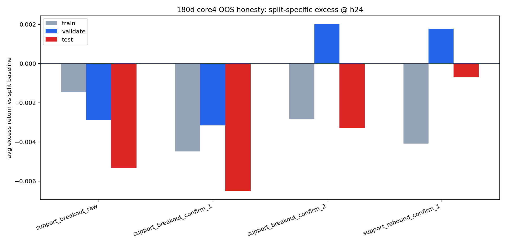
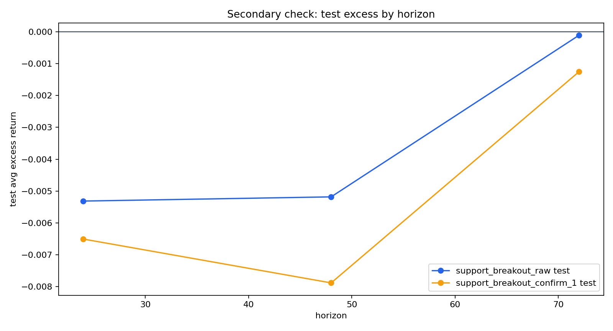

这页只做一件事：给 v3 一个尽量诚实、足够能收工的结论。我们不再继续无限加样本、加市场、加参数，而是直接回答：v3 里到底还有哪些对象值得保留，哪些该降级，哪些可以 park。
support_breakout_raw @ h24 和 support_breakout_confirm_1 @ h24。它们当前更像 continuation short 候选，但还不够格被写成“正式生产 alpha 已确认”。support_breakout_confirm_2。在这轮最小参数邻域里，它已经明显更不稳。support_rebound_confirm_1。它更像 watch / feature，不是 clean long alpha。一句人话：v3 最终没告诉我们“趋势线反弹能稳定做多”，但它留下了一个仍值得保留的结论：support-breakout 这类事件，在 h24 上更像 continuation short 候选，只是强度没有强到可以直接毕业成正式阿尔法。
train / validate / test。confirm = 0 / 1 / 2 三档，判断它是不是一碰就碎。为什么用这套最小协议？因为目标是“尽快收工”，不是再开一条更大的研究支线。

support_breakout_raw 和 support_breakout_confirm_1 在 test 都还是干净负 excess；而 confirm_2 已经开始不稳。这张表是主判据。别只盯 event_mean，更该看 avg_excess_ret 和每个 split 里有多少资产同向为负。
| event_type | horizon | split | events | event_mean | avg_excess_ret | pos_symbols_excess | neg_symbols_excess | zero_symbols_excess |
|---|---|---|---|---|---|---|---|---|
| support_breakout_confirm_1 | 24 | test | 41 | -0.008026 | -0.006509 | 1 | 3 | 0 |
| support_breakout_confirm_1 | 24 | train | 125 | -0.007272 | -0.004485 | 1 | 3 | 0 |
| support_breakout_confirm_1 | 24 | validate | 40 | -0.008704 | -0.003158 | 2 | 2 | 0 |
| support_breakout_confirm_1 | 48 | test | 41 | -0.009577 | -0.007887 | 1 | 3 | 0 |
| support_breakout_confirm_1 | 48 | train | 125 | -0.004159 | 0.001397 | 3 | 1 | 0 |
| support_breakout_confirm_1 | 48 | validate | 40 | -0.014064 | -0.000909 | 2 | 2 | 0 |
| support_breakout_confirm_1 | 72 | test | 41 | -0.002285 | -0.001252 | 2 | 2 | 0 |
| support_breakout_confirm_1 | 72 | train | 125 | -0.007944 | 0.000525 | 3 | 1 | 0 |
| support_breakout_confirm_1 | 72 | validate | 40 | -0.028726 | -0.004791 | 1 | 3 | 0 |
| support_breakout_confirm_2 | 24 | test | 40 | -0.005022 | -0.003288 | 2 | 2 | 0 |
| support_breakout_confirm_2 | 24 | train | 119 | -0.005710 | -0.002836 | 0 | 4 | 0 |
| support_breakout_confirm_2 | 24 | validate | 40 | -0.003620 | 0.002023 | 3 | 1 | 0 |
| support_breakout_confirm_2 | 48 | test | 40 | -0.025365 | -0.022914 | 1 | 3 | 0 |
| support_breakout_confirm_2 | 48 | train | 119 | -0.005624 | -0.000047 | 2 | 2 | 0 |
| support_breakout_confirm_2 | 48 | validate | 40 | -0.009189 | 0.004351 | 3 | 1 | 0 |
| support_breakout_confirm_2 | 72 | test | 40 | -0.009080 | -0.007928 | 1 | 3 | 0 |
| support_breakout_confirm_2 | 72 | train | 119 | -0.009854 | -0.001333 | 2 | 2 | 0 |
| support_breakout_confirm_2 | 72 | validate | 40 | -0.022915 | 0.001083 | 2 | 2 | 0 |
| support_breakout_raw | 24 | test | 40 | -0.006723 | -0.005316 | 1 | 3 | 0 |
| support_breakout_raw | 24 | train | 125 | -0.004295 | -0.001465 | 2 | 2 | 0 |
| support_breakout_raw | 24 | validate | 43 | -0.008373 | -0.002867 | 0 | 4 | 0 |
| support_breakout_raw | 48 | test | 40 | -0.006887 | -0.005184 | 2 | 2 | 0 |
| support_breakout_raw | 48 | train | 125 | -0.008939 | -0.003391 | 2 | 2 | 0 |
| support_breakout_raw | 48 | validate | 43 | -0.018173 | -0.004891 | 1 | 3 | 0 |
| support_breakout_raw | 72 | test | 40 | -0.000951 | -0.000107 | 3 | 1 | 0 |
| support_breakout_raw | 72 | train | 125 | -0.009698 | -0.001219 | 2 | 2 | 0 |
| support_breakout_raw | 72 | validate | 43 | -0.029188 | -0.005249 | 1 | 3 | 0 |
| support_rebound_confirm_1 | 24 | test | 44 | -0.003110 | -0.000689 | 1 | 3 | 0 |
| support_rebound_confirm_1 | 24 | train | 128 | -0.006970 | -0.004079 | 1 | 3 | 0 |
| support_rebound_confirm_1 | 24 | validate | 43 | -0.003659 | 0.001782 | 2 | 2 | 0 |
| support_rebound_confirm_1 | 48 | test | 44 | -0.007340 | -0.004213 | 3 | 1 | 0 |
| support_rebound_confirm_1 | 48 | train | 128 | -0.009811 | -0.004208 | 1 | 3 | 0 |
| support_rebound_confirm_1 | 48 | validate | 43 | -0.005512 | 0.007438 | 4 | 0 | 0 |
| support_rebound_confirm_1 | 72 | test | 44 | 0.000333 | 0.001818 | 2 | 2 | 0 |
| support_rebound_confirm_1 | 72 | train | 128 | -0.012133 | -0.003628 | 0 | 4 | 0 |
| support_rebound_confirm_1 | 72 | validate | 43 | -0.023395 | 0.000131 | 2 | 2 | 0 |
这页的小参数稳健性，不是全网格爆搜，而是只围着当前 breakout-short 候选看最近的一圈邻域：不确认 / 1-bar 确认 / 2-bar 确认。
| event_type | train_h24_excess | validate_h24_excess | test_h24_excess | oos_avg_excess | validate_neg_assets | test_neg_assets | best_cell_count_validate_test | reading |
|---|---|---|---|---|---|---|---|---|
| support_breakout_raw | -0.001465 | -0.002867 | -0.005316 | -0.004091 | 4 | 3 | 4 | raw 在 validate 更干净（4/4 负 excess），说明不加确认并没有被直接淘汰。 |
| support_breakout_confirm_1 | -0.004485 | -0.003158 | -0.006509 | -0.004834 | 2 | 3 | 2 | confirm=1 在 test 更强，但 validate 不如 raw 干净；更像 co-primary，而不是压倒性第一。 |
| support_breakout_confirm_2 | -0.002836 | 0.002023 | -0.003288 | -0.000633 | 1 | 2 | 2 | confirm=2 在这圈邻域里最不稳：validate 已经翻成正 excess，不适合当 primary。 |
raw 和 confirm_1 都还活着，所以 breakout short 不是“只在一个参数点上碰巧成立”。raw 在 validate 更干净，confirm_1 在 test 更强，所以更合理的说法是 co-primary，而不是压倒性冠军。
这张图只回答一个问题：如果不只看 h24，而把眼睛伸到 h48 / h72，会不会马上完全翻脸？
| event_type | horizon | validate_excess | test_excess | validate_neg_assets | test_neg_assets | reading |
|---|---|---|---|---|---|---|
| support_breakout_raw | 24 | -0.002867 | -0.005316 | 4 | 3 | 主评估 horizon；当前最适合拿来做最终 honesty judgement。 |
| support_breakout_raw | 48 | -0.004891 | -0.005184 | 3 | 2 | 方向还偏负，但 split 内资产同向性开始松动。 |
| support_breakout_raw | 72 | -0.005249 | -0.000107 | 3 | 1 | 方向还偏负，但 split 内资产同向性开始松动。 |
| support_breakout_confirm_1 | 24 | -0.003158 | -0.006509 | 2 | 3 | 主评估 horizon；当前最适合拿来做最终 honesty judgement。 |
| support_breakout_confirm_1 | 48 | -0.000909 | -0.007887 | 2 | 3 | 可以做 secondary check，但不如 h24 干净；不要拿它替代主结论。 |
| support_breakout_confirm_1 | 72 | -0.004791 | -0.001252 | 3 | 2 | 可以做 secondary check，但不如 h24 干净；不要拿它替代主结论。 |
| object | verdict | why | key_numbers |
|---|---|---|---|
| support_breakout_raw @ h24 | keep as alpha candidate | validate 与 test 都是负 excess；validate 4/4 资产同向为负，说明它不是只在单一币种上好看。 | validate -0.29%, test -0.53% |
| support_breakout_confirm_1 @ h24 | keep as co-primary alpha candidate | test 段比 raw 更负，但 validate 没有 raw 那么干净；最合理的身份是并列第一梯队。 | validate -0.32%, test -0.65% |
| support_breakout_confirm_2 @ h24 | park as primary variant | confirm=2 在这轮小参数邻域里明显更不稳；validate 已翻成正 excess，不适合继续占主资源。 | validate +0.20%, test -0.33% |
| support_rebound_confirm_1 @ h24 | keep as feature/watch, not alpha | 它没有给出持续、干净的正 excess；更像观察名单，不像可以直接毕业成 long alpha。 | validate +0.18%, test -0.07% |
| V3 overall | close research line with breakout-short candidate retained | v3 作为事件研究页已经回答了最关键问题：有一个还值得保留的 breakout-short 候选，但还不够支持“正式生产 alpha 已确认”。更合理的收工方式是保留 candidate，停止继续在 v3 页里无限扩题。 | best retained objects = support_breakout_raw / support_breakout_confirm_1 @ h24 |
support_breakout_raw @ h24support_breakout_confirm_1 @ h24support_breakout_confirm_2support_rebound_confirm_1support_breakout_raw / confirm_1 @ h24 是否能在加入交易成本、执行延迟、非重叠持仓规则后，仍保有优势。最后一句：v3 的价值在于帮我们筛掉了很多看起来漂亮但不稳的东西，并留下了一个还值得保留的 breakout-short 候选。对研究来说，这已经是一个合格的“收工点”。